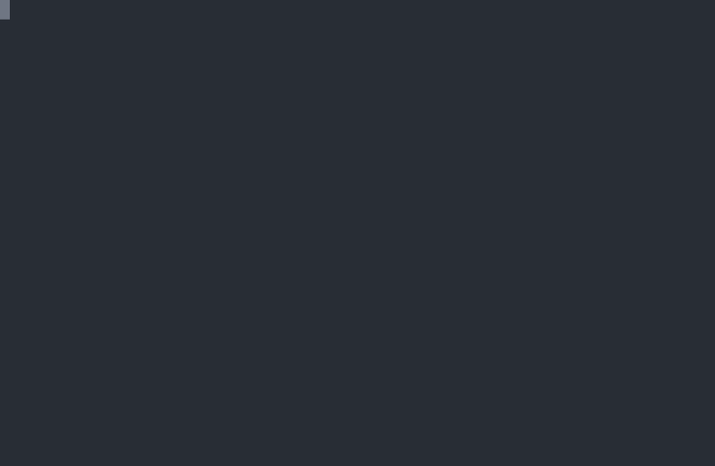

Asciinema in Markdown
Mein Static Site Generator kann ja bereits seit einiger Zeit mit Asciinema-Dateien umgehen und diese einbinden - ich war aber auf der Suche, diese Einbindung auch in Gitlab und/oder Github nutzen zu können...
Ein Beispiel für die Einbindung in meine Heimatseite ist hier zu sehen.
Ich habe in letzter Zeit hin und wieder darüber nachgedacht, dass so etwas in Open-Source-Projekten auf Github oder Gitlab ebenfalls nützlich sein könnte - speziell wenn man es gleich in die Readme.md einbinden könnte, besonders, weil man die eingegebenen Terminal-Kommandos dann gleich daraus kopieren könnte.
Leider ist die direkte Einbindung auf beiden Plattformen derzeit nicht möglich - man kann aber ein Bild (sozusagen einen Screenshot) aus der Animation erzeugen und diesen als Bild in die Readme.md einfügen und als Link zur eigentlichen Animation ausprägen.
Das reichte mir aber nicht - dann stolperte ich über ein Projekt, das aus den Asciinema-Dateien animierte SVG-Graphiken erzeugen kann. Damit wird aus dieser Animation dieses Bild:

Asciinema-Animation als SVGDer Nachteil dabei ist natürlich, dass das dann kein interaktiver Player mehr ist, dessen Wiedergabe man beliebig pausieren kann und - was noch wichtiger erscheint - man kann auch nicht mehr Kommandos aus dem Player heraus kopieren, wie es eines der hervorstechendsten Merkmale des Originals ist. Aus meiner Sicht sollte man also auf jeden Fall auch eine so erzeugte Graphik unbedingt mit einem Link zum echten Asciinema-Player hinterlegen!
Darüber hinaus existieren auch verschiedene Projekte, die eine Asciinema-Animation in ein Anim-Gif verwandeln.
Möchte man (bei lokal gehosteten Asciinema-Animationen) ein einzelnes Frame extrahieren, das als Bild für einen Verweis auf die Animation dienen soll, kann man das mittels folgenden Kommandos erreichen (nutzt man das Cloud-Angebot, ist die Erstellung eines solchen Bildes bereits inklusive):
xterm -e asciinema play globe.js& export APP_PID=$! && sleep 10 && xwd -id $(xdotool search --pid $APP_PID) | convert xwd:- image.png
Der Wert hinter sleep sollte mindestens 1 betragen, da sonst unter umständen das Terminal noch nicht geöffnet ist - mit ihm kann man auch einige Sekunden überspringen, wenn man den Screenshot nicht gleich zu Beginn der Animation erzeugen möchte...


Vor 5 Jahren hier im Blog
-
DIY EBook-Reader
01.06.2019
Ein Kollege von mir begann mich bereits vor ein paar Wochen auszufragen, was mein nächstes Urlaubsprojekt wäre. Bisher musste ich ihm sagen, dass ich noch keine Pläne hatte. Das hat sich jetzt geändert:
Weiterlesen...
Tags
Android Basteln C und C++ Chaos Datenbanken Docker dWb+ ESP Wifi Garten Geo Git(lab|hub) Go GUI Gui Hardware Java Jupyter Komponenten Links Linux Markdown Markup Music Numerik PKI-X.509-CA Python QBrowser Rants Raspi Revisited Security Software-Test sQLshell TeleGrafana Verschiedenes Video Virtualisierung Windows Upcoming...
Neueste Artikel
- sQLshell Version 7.7pre4 build 10491
Eine neue Version der sQLshell ist verfügbar!
Weiterlesen... - LinkCollections 2024 IV
Nach der letzten losen Zusammenstellung (für mich) interessanter Links aus den Tiefen des Internet von 2024 folgt hier gleich die nächste:
Weiterlesen... - sQLshell, SQLite und Redis - oh my!
Ich habe in letzter Zeit hin und wieder mit der sQLshell und SQLite herumgespielt - Neulich wurde ich gefragt, ob die sQLshell eigentlich auch Redis kann...
Weiterlesen...
Manche nennen es Blog, manche Web-Seite - ich schreibe hier hin und wieder über meine Erlebnisse, Rückschläge und Erleuchtungen bei meinen Hobbies.
Wer daran teilhaben und eventuell sogar davon profitieren möchte, muß damit leben, daß ich hin und wieder kleine Ausflüge in Bereiche mache, die nichts mit IT, Administration oder Softwareentwicklung zu tun haben.
Ich wünsche allen Lesern viel Spaß und hin und wieder einen kleinen AHA!-Effekt...
PS: Meine öffentlichen GitHub-Repositories findet man hier - meine öffentlichen GitLab-Repositories finden sich dagegen hier.